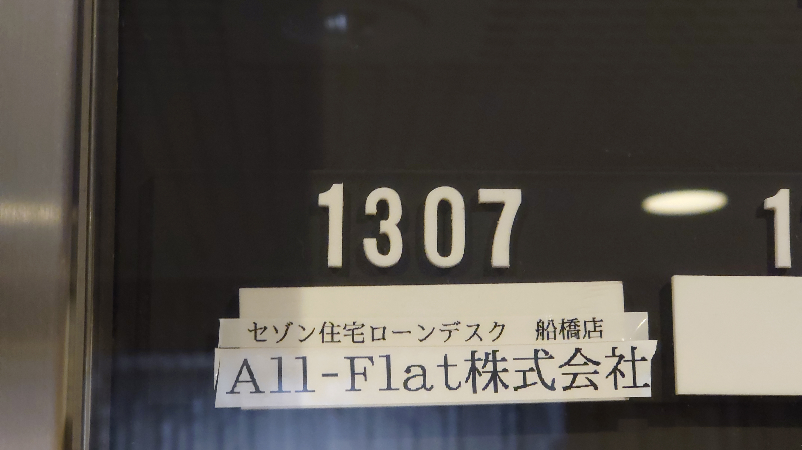
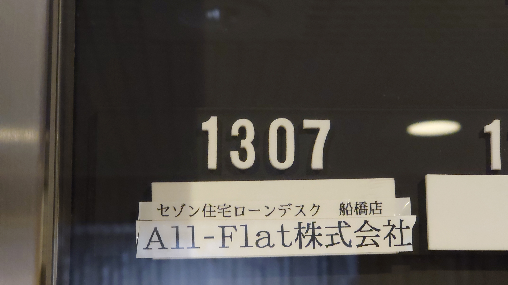
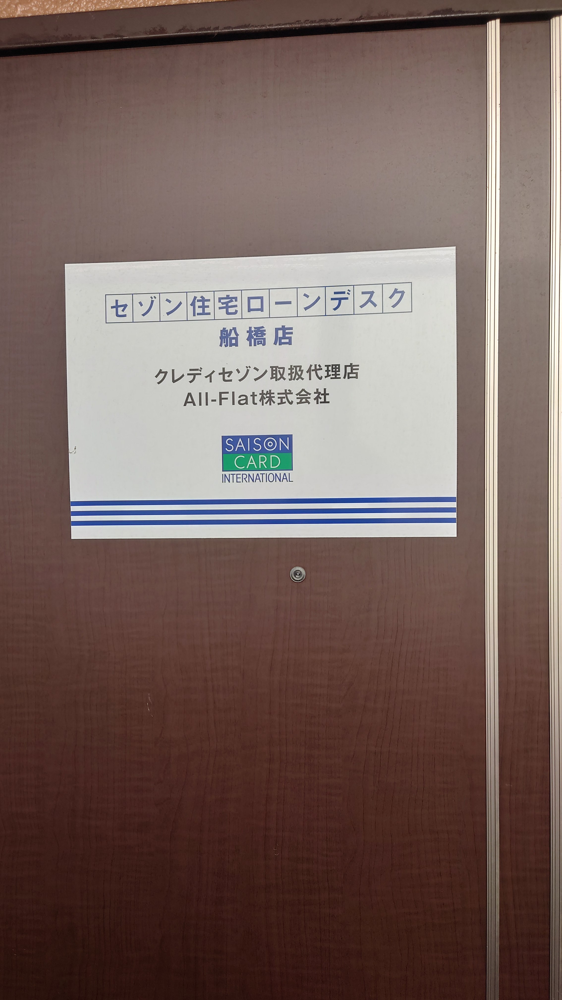
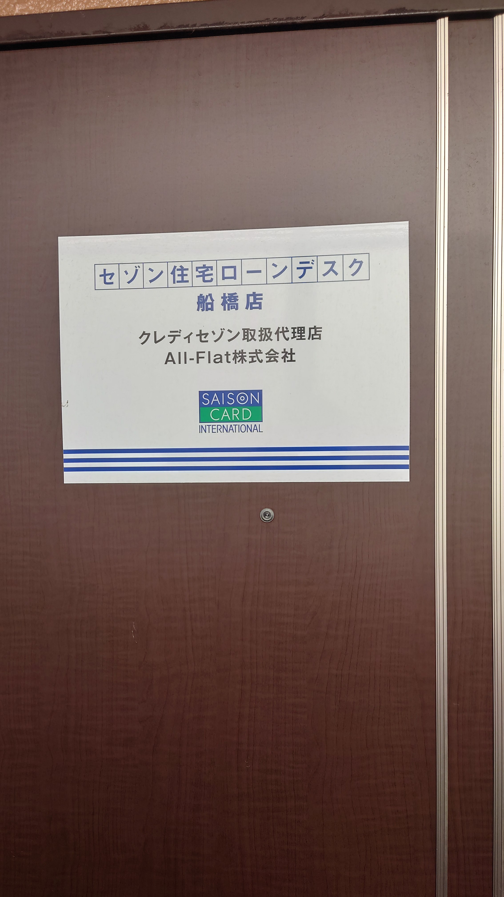

店舗案内
≪新宿店≫
〒151-0053 東京都渋谷区代々木2-23-1 ニューステイトメナー1342 号室 TEL:03-6300-6720、03-6300-4300 FAX:03-6300-6741


≪船橋店≫
〒273-0005 千葉県船橋市本町6-2-10 ダイアパレスステーションプラザ1307 号室 TEL:047-409-8860、047-409-9523 FAX:047-409-8871
 

 

≪柏店≫
〒277-0863 千葉県柏市豊四季1008-12 アヴニール豊四季104 号室 TEL:04-7157-2052、04-7157-2081 FAX:04-7157-2053


≪横浜店≫
〒220-0073 神奈川県横浜市西区岡野1-10-3 ストーク横浜参番館204 号 TEL:045-620-9905、045-534-5327 FAX:045-620-9912


All-Flat 株式会社 〒151-0053東京都渋谷区代々木2-23-1 ニューステイトメナー1342号 TEL:03-6300-6720 FAX:03-6300-6741
Copyright (c) All-Flat Co., Ltd. All Rights Reserved.